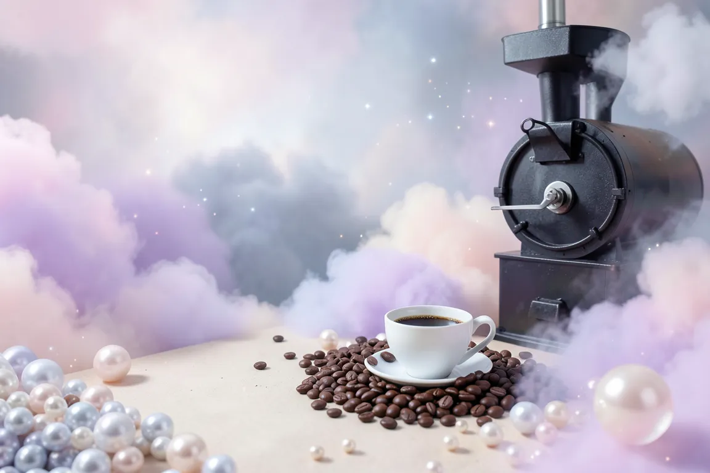

Pale, glowing pastels, soft focus, thin serif or light sans type, translucent layers and air. It aims at a calm, dreamlike, weightless mood and reads as light rather than as object.

Core thesis
Lightness is luxury: haze, glow and space make a quiet, weightless world.
Design principles
Set the ground in a pale gradient between 2 or 3 tints (for example #FDF7FF to #EAF4FF) with lightness above 92%.
Add soft blobs of colour 300px to 700px wide, blurred by 100px to 200px, at 30% to 50% opacity in pastel hues.
Set headings in a light serif or a thin sans at weight 200 to 300 and size 48px to 96px, with tracking of -0.01em to +0.04em.
Layer translucent panels: white at 40% to 60%, blur of 16px to 32px, a 1px white border at 60% and a radius of 24px to 40px.
Use a shadow of 0 20px 60px at 6% to 10% in a tinted colour and never a grey or black shadow above 12%.
Keep text colour in a soft slate (#4A4A5E) with contrast of at least 4.5:1; avoid pure black.
Animate slowly: fades and drifts of 8px to 24px over 800ms to 1500ms.